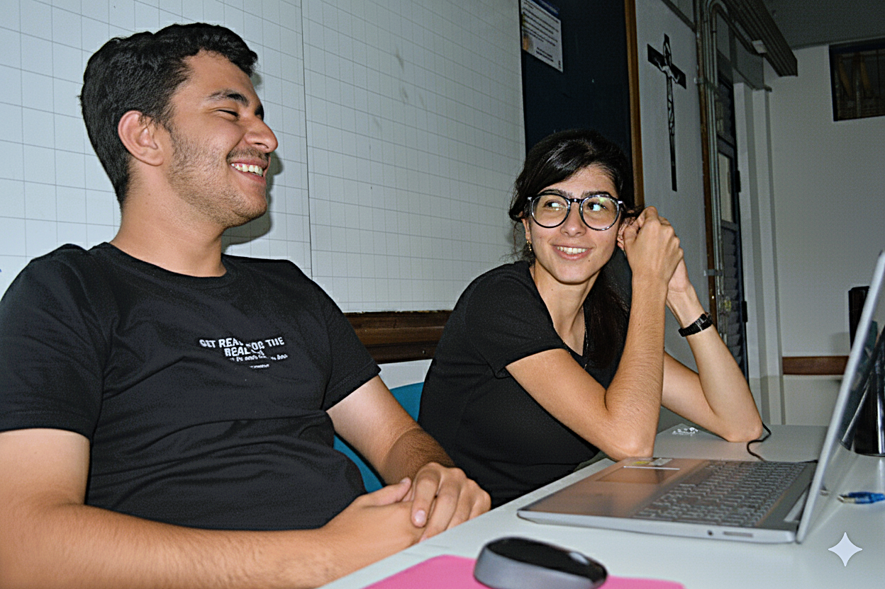
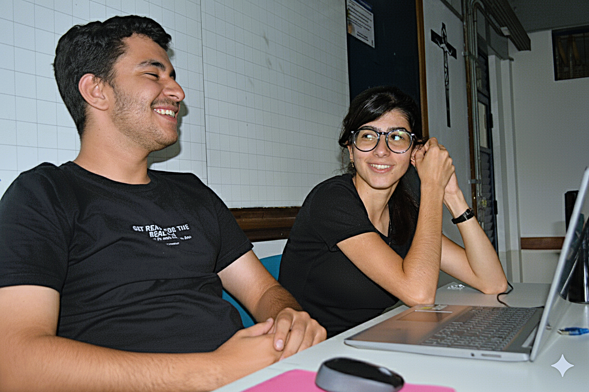

A DATA Engenharia consolidou-se como um pilar fundamental em setores críticos da economia, incluindo energia, mineração, siderurgia e papel e celulose, através da fabricação, reforma e modernização de motores, geradores e transformadores de médio e grande porte. A reputação da empresa é construída sobre a premissa de engenharia de precisão e controle de qualidade rigoroso. No entanto, um desafio sistêmico está a minar esta fundação: motores elétricos de alto valor, que são aprovados em testes exaustivos de fábrica, incluindo análises detalhadas de espectros de vibração e aceleração, estão a chegar às instalações dos clientes com sinais de falha incipiente nos rolamentos.
Este fenômeno resulta em reclamações de clientes e acionamentos de garantia, criando um conflito direto entre a qualidade certificada na origem e a performance real no destino. A investigação do problema revelou que a degradação não ocorre durante o processo de fabrico, mas sim na fase de transporte, especialmente em viagens longas por estradas precárias. Esta "última milha" logística representa uma lacuna crítica no ciclo de vida do produto, onde um ativo de engenharia de precisão é exposto a um ambiente não controlado que anula o valor das garantias de qualidade de fábrica e, mais criticamente, corrói a confiança do cliente. O problema, portanto, não é um defeito de fabrico, mas uma falha sistêmica na proteção de ativos e na gestão logística, exigindo uma solução que transcenda os limites da oficina e abranja todo o percurso até à instalação final.


 
